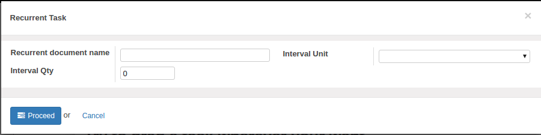
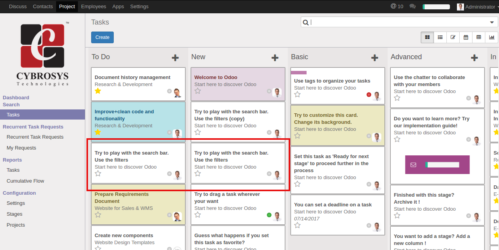

Create recurrent task in project

Users can send a request to corresponding project manager for creating recurrent task from task's form.

Here users can give specific interval type and interval quantity for recurrence.
